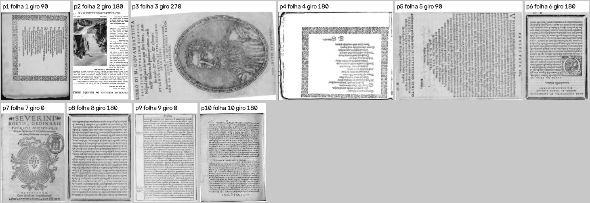
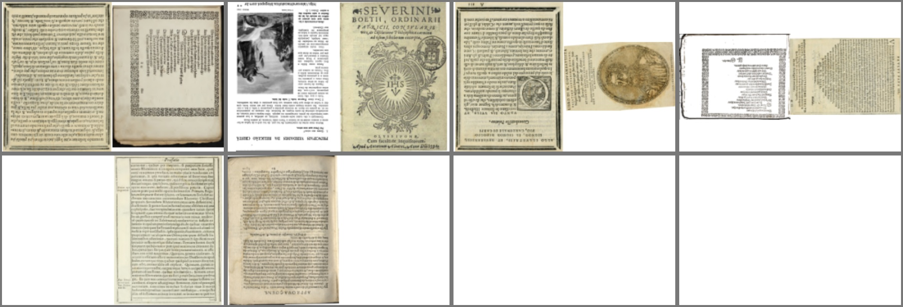
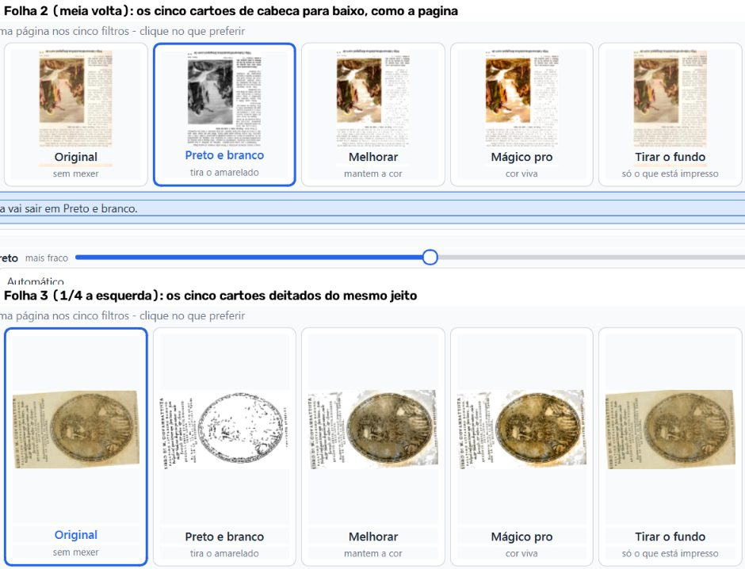
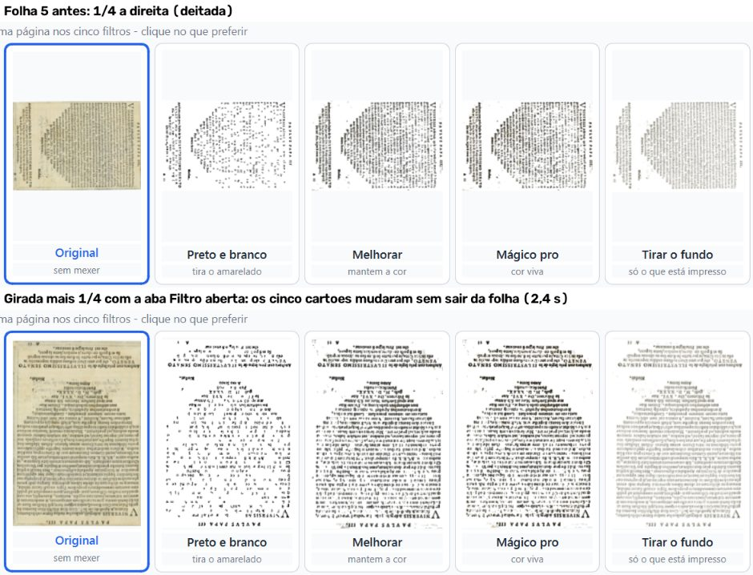
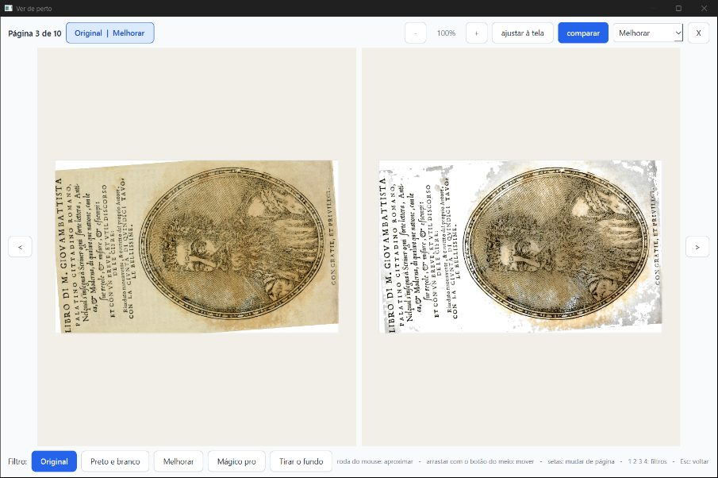
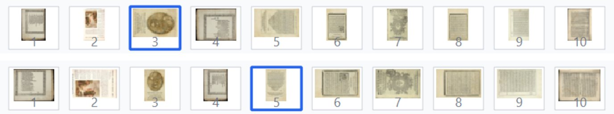
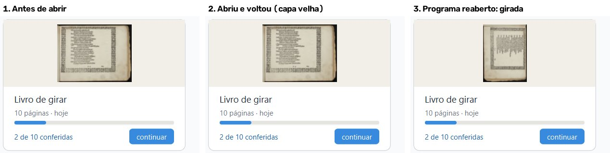
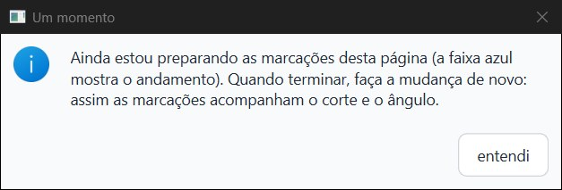

PRONTO PARA JUNTAR, com ressalvas. Os cinco consertos fazem o que prometem.
Ficou uma falha pequena no conserto das miniaturas e da capa. A capa nova é gravada certa. Mas, se a pessoa volta para a tela inicial pelo botão "voltar" das opções, o cartão continua mostrando a capa velha até o programa ser aberto de novo.
Achei também dois defeitos que não vêm destes consertos: eles já existem no fase-1. Estão no fim, para a Lista de bugs.
Não é "aprovado": só o Samuel marca.
Defeito conhecido (decisão do Samuel, 28/09): moldura dourada e iluminura continuam sendo defeito conhecido da Fase 1. Estes consertos não mexem na imagem das páginas. O PDF saiu idêntico, pixel a pixel, ao do
fase-1nas 10 páginas do livro de teste, giradas ou não. Também saiu idêntico em cadernos e em Mágico pro.
O que foi conferido:
fase2-geometria, commit 89fae91, com os consertos ee84f80, 695cc30, edd5db7, 5b4598a e 89fae91;cc00d5c (antes dos consertos) e com o fase-1 (14c4829).Como foi conferido:
| Conserto | Como | Resultado |
|---|---|---|
ee84f80: cartões da aba Filtro giram uma vez só |
janela real + máquina + olho | Bom. Nas folhas 1 a 6 (giros de 90, 180 e 270), os 30 cartões ficaram no mesmo giro da página. Girar ¼ com a aba Filtro aberta refez os cinco cartões em 2,4 s, sem sair da folha. O "comparar" da tela ampliada ficou no giro certo nas 8 comparações (folha 1, giro 90; folha 3, giro 270) |
695cc30: a folha da vez nunca mostra a imagem de outra folha |
janela real + máquina | Bom. Foram 30 rodadas nas abas Bordas, Endireitar e Onde cortar, andando rápido e girando "todas" no meio, com 3.567 amostras da tela. Em nenhuma apareceu a imagem de outra folha, e as 30 terminaram na imagem certa. Depois de girar e desfazer, as 30 folhas (3 abas × 10) voltaram com a imagem do giro certo: nenhuma prévia velha voltou da memória |
edd5db7: miniaturas e capa acompanham o giro |
janela real + máquina + olho | Bom, com uma falha pequena. As 10 miniaturas ficaram no giro certo em 6 situações seguidas: ao abrir, girar uma folha, girar todas ¼ à esquerda, reabrir o livro, girar todas ¼ à direita e desfazer. A capa.png foi gravada com o giro da folha 1 nas 8 conferências, e não mudou quando outra folha girou. A falha: voltando pelo "voltar" das opções, o cartão da tela inicial continua com a capa velha. Ela só aparece girada quando o programa é aberto de novo (imagem 5) |
5b4598a: mudar corte, borda ou ângulo espera as zonas antigas |
janela real + máquina | Bom. No Boécio antigo, durante "Preparando as marcações…", três coisas foram barradas: o "usar em todas" da linha de corte, o "usar em todas" da borda e um Ctrl+Z de outra sessão. Nas três, apareceu o aviso "Um momento" e nada mudou. Depois da conversão, as três funcionaram. Nas cinco rodadas, as 698 zonas das 50 páginas ficaram no mesmo lugar do papel que na rodada sem mudança (diferença ≤ 0,002 da folha) |
89fae91: PDF comprimido ao escrever cada página |
janela real + máquina | Bom. No fim do "Processar", a janela parou 0,80 s e 0,61 s, contra 4,22 s e 4,16 s no código antigo (vigia de 25 ms dentro do programa). Os pixels do PDF são os mesmos do fase-1. Na janela, o processar inteiro ficou mais rápido: 11,2 s e 9,4 s, contra 14,7 s e 13,3 s. Sem janela, o tempo ficou igual (veja Velocidade) |
test_girar.py: 34 passaram;test_girar_cartoes_e_previas.py: 22 passaram;test_girar_na_tela.py: 16 passaram;test_gravar_pdf_sem_parar_a_janela.py: 5 passaram.teste_botoes.py: 159 ações, 0 falhas. Rodou numa cópia git archive do 89fae91, com saida_teste própria. Os botões de girar e o "Aplicar o giro em" estão no meio das ações.fase-1:fase-1 têm os mesmos pixels nas 10 páginas, giradas ou não, com o mesmo tamanho de página. O desenho a 100 DPI também é igual;






capa.png no disco já esteja girada;
3. com o programa aberto de novo, a capa aparece girada.
O processar não ficou mais lento de um jeito que dê para medir, e gasta menos memória.
| Medida | 89fae91 (novo) |
cc00d5c (antes) |
|---|---|---|
| Teste oficial, Mágico pro, 10 páginas (de costume) | 1 min 9 s | 1 min 21 s |
| Teste oficial, Preto e branco, 10 páginas (de costume) | 30,7 s | 36,0 s |
| Teste oficial, memória máxima | 1.378 MB | 1.575 MB |
| Sem janela, intercalado, Mágico pro, 10 páginas (3 rodadas, mediana) | 21,8 s | 21,0 s (fase-1) |
| Sem janela, intercalado, Preto e branco, 10 páginas (3 rodadas, mediana) | 8,1 s | 8,2 s (fase-1) |
| Na janela, do clique em Processar até a tela final (2 rodadas) | 11,2 s e 9,4 s | 14,7 s e 13,3 s |
| Na janela, maior parada no fim do Processar | 0,80 s e 0,61 s | 4,22 s e 4,16 s |
Ressalva da medida: o PC estava sendo usado por outros agentes ao mesmo tempo, e o teste oficial variou muito de uma rodada para outra. No código antigo, a 3ª rodada de Mágico pro levou 59 s e a 2ª, 81 s. Por isso:
edd5db7, pequena):
- o "voltar" da tela de opções só troca de tela e não remonta os cartões. Por isso a capa (e também o andamento) do cartão fica como estava quando a tela inicial foi montada;
- a capa.png é gravada certa, e o "fazer outro", o processar e reabrir o programa remontam o cartão;
- um livro girado antes do conserto só tem a capa refeita quando é aberto.test_d2_a_tira_divide_a_folha_girada.fase-1). Quando a pessoa desfaz uma ação, faz outra e reabre o livro, o Ctrl+Z passa a desfazer a ação errada. Ele desfaz a que já tinha sido desfeita, e a última ação vira "refazer".historico_acoes.registrar limpa o "refazer" só na memória, e o arquivo acoes.jsonl continua com a ação desfeita no meio.fase-1. Fiz A, fiz B, desfiz B e fiz C. Na memória ficou [A, C]. Depois de reabrir, ficou [A, B], com C no "refazer".relatorios/conferir/girar-2026-10-06/verificador-3/parecer-verificador-3-consertos-girar.html (também .md e .pdf)..../verificador-3/imagens/. Prints inteiros (fora do git): .../verificador-3/prints/..../verificador-3/trabalho/girar.log.trabalho/pytest_partes.log. teste_botoes: trabalho/teste_botoes.log.trabalho/velocidade_novo/, trabalho/velocidade_antigo/ e trabalho/ab_tempos.txt.trabalho/comparacao_*.json e trabalho/pdf_conferir_*.json..../verificador-3/scripts/. Os principais:d1.py: cartões;d2.py: tira e capa;d4.py: 40 referências por aba, as variantes e o desfazer;s5_boecio.py e comparar_zonas.py: zonas antigas;pdf_conferir.py: ordem e giro do PDF;vel.py: velocidade.Editor de Impressão · gerado em 06/10/2026 às 13:39